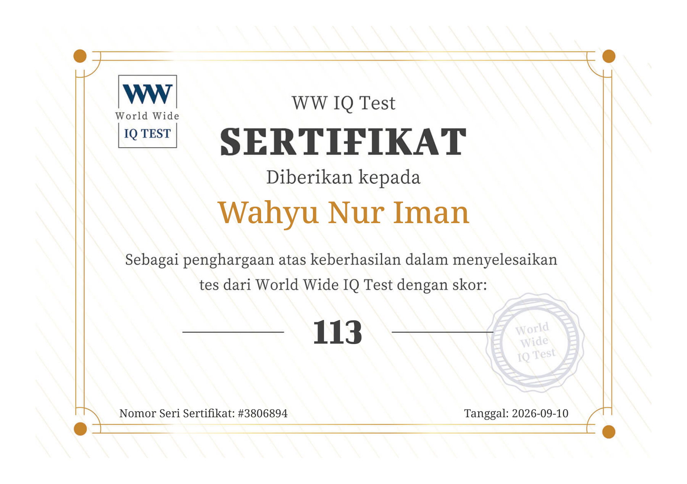
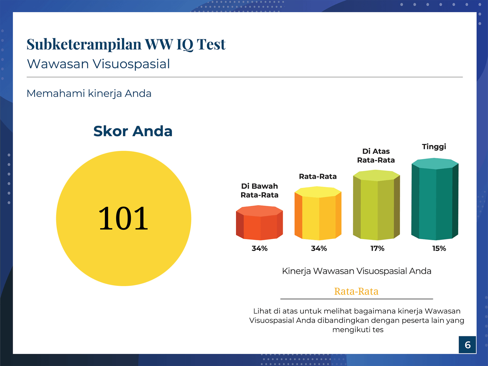
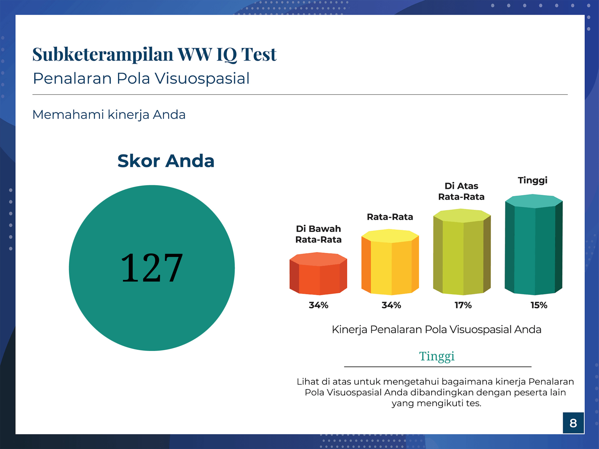
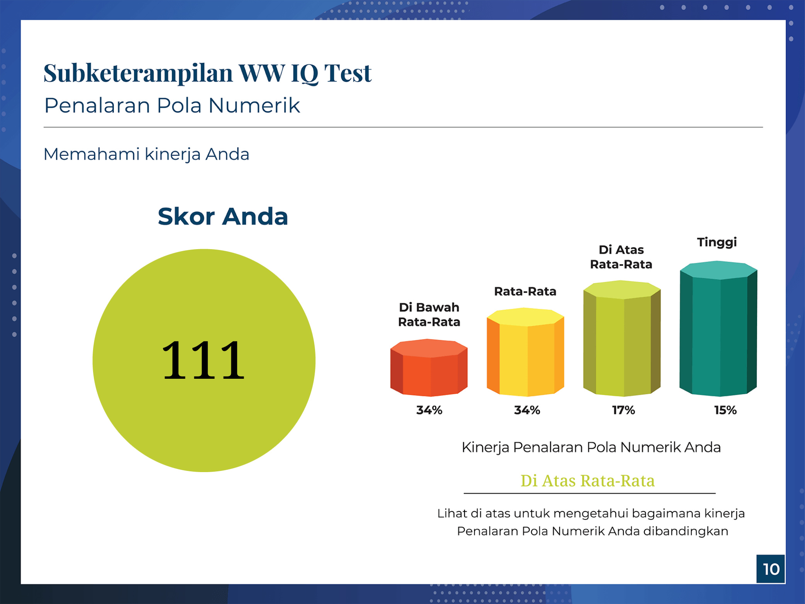
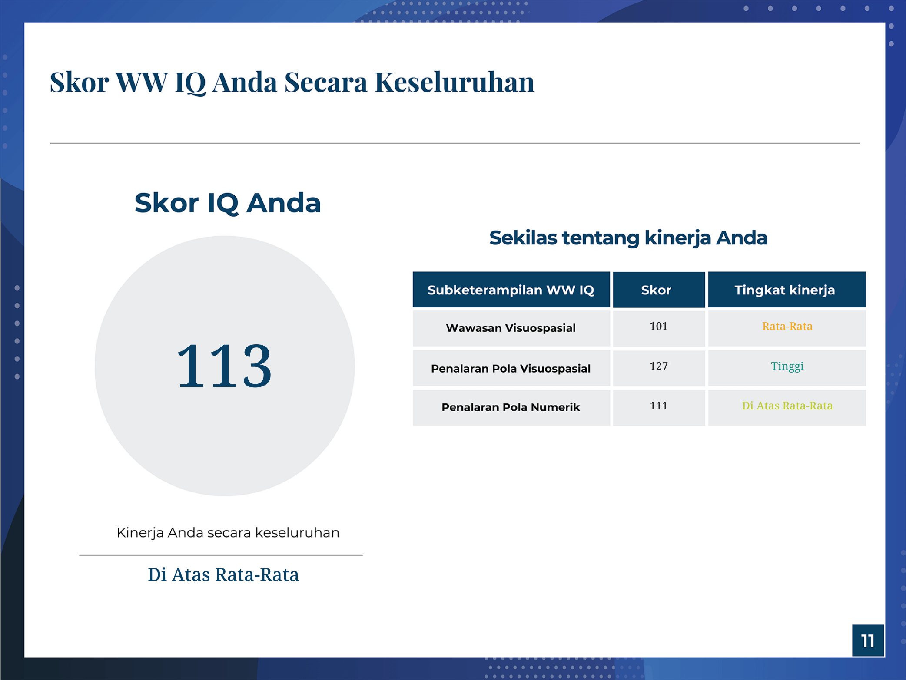

Wahyu Nur Iman
Data Analyst | Administration | Data & Process Automation
Experienced in operational data management, reporting, and building automation tools to enhance daily workflow efficiency.
About Me
Data Analyst with experience in operational administration, reporting data management, and creating automation tools. Accustomed to managing manpower, payroll administration, and end-to-end project monitoring.
Focus Area
Complete Profile
Certifications & Test Results
World Wide IQ Test





Professional Experience
Data Analyst
PT. Impact Power Mandiri (Staffinc Group)
- Data Management & Reporting: Developed and maintained project performance dashboards and compiled routine reports (daily, weekly, monthly) to monitor target achievements and support decision-making.
- Process Automation: Created internal tools utilizing Google Apps Script, VBA, and Fuzzy Lookup to automate similarity matching and account number validation, significantly reducing manual effort.
- Operational Excellence: Managed full-cycle manpower operations for various client projects, ensuring all operations were executed in accordance with SLAs.
- Payroll & Administration: Supervised the preparation and management of employment legal documents (PKWT) and administration for BPJS Ketenagakerjaan & Kesehatan (National Health & Employment Insurance).
- Financial Operations: Handled Cash Advance (CA) submissions, reimbursements, payment requests, and invoicing administration with high accuracy to support smooth project financials.
- App Development & Customization: Developed and customized applications for field team reporting and attendance (MD, SPG) across various projects, aligning application workflows with user requirements.
- Training & Implementation: Led product and system training sessions (AppSheet, IDR & Istrike), ensuring field teams' readiness and compliance with client operational standards.
- Event Management: Acted as Event PIC taking full responsibility for Point of Sales Materials (POSM) preparation, event production needs, and monitoring smooth event execution from start to finish.
- Fuzzy Matching Automation: Built a Python tool using RapidFuzz and Pandas to match store and manpower names with inconsistent spellings based on similarity scores, dramatically speeding up data reconciliation across databases.
- ZIP-to-Excel Data Extraction: Built a tool that extracts ZIP archives containing large numbers of PDF documents, pulls the required information from each file, and compiles it into structured Excel data — replacing hours of manual recapping with one automated run.
- Auto-Create Report: Built an automated report-generation system (Auto-Create-Report) that processes operational data into ready-to-use daily, weekly, and monthly reports for performance monitoring and business reporting needs.
- SPG/MD Workforce Management System: Designed and built an AppSheet + Google Sheets platform to manage workforce data, schedules, GPS-based attendance, store visits, field activities, approvals, KPIs, and audit logs for SPG/MD teams.
- Talent Acquisition Management System: Developed a recruitment system on Google Apps Script, Google Sheets, and Google Drive to manage candidate databases, CVs and photos, selection stages, and a recruiter dashboard — including duplicate-candidate validation (name + WhatsApp number), CV-viewed tracking (CV_Dilihat), and validated CV/photo uploads organized into dedicated Drive folders.
- RFP-S Financial & Resource Planning System: Developed a financial and resource planning application on Google Apps Script with invoice workflows, per-project access control, audit logs, and an operations recovery mechanism.
- Projects Handled:
Medical Record Staff
PT. MH Thamrin (Radjak Hospital)
- Medical Record Management: Systematically managed the administration and registration of patient medical records, ensuring document completeness and neatness in compliance with hospital Standard Operating Procedures (SOP).
- Data Entry & System Update: Accurately and timely updated patient data into the Hospital Management Information System to support seamless medical services.
- Document Preparation: Routinely prepared operational supporting documents, including service invoices and patient control letters.
- Cross-functional Coordination: Proactively reported patient status to doctors and the medical team to accelerate the medical follow-up process.
Skills
Data & Reporting
 Google Sheets
Data Processing
Dashboarding
Appsheets / Istrike / IDR
Google Sheets
Data Processing
Dashboarding
Appsheets / Istrike / IDR
Process Automation
 Google Apps Script
VBA Toolkit
Google Apps Script
VBA Toolkit
 Basic Python
PowerShell / CMD
Basic Python
PowerShell / CMD
Additional & Tools
 HTML / CSS
HTML / CSS
 Github
JotForm
Github
JotForm
 Cloudinary
Slack (Workflows)
Cloudinary
Slack (Workflows)
Soft Skills
Systematic data administration and management, data analysis & problem solving, cross-functional & stakeholder communication, adaptable to new systems, detail-oriented and meticulous.
Work Documentation
PT. Impact Power Mandiri
Dashboard Analytics, Fulfillment, & Events
PT. MH Thamrin (Radjak Hospital)
Administration & Medical Records
GitHub & Open Source
Senior-Data-Analyst
Advanced data analysis projects and Data Analyst portfolio.
AI-Habitat
Intelligent simulation environment and system for AI agents.
Phantom-Hand
Advanced control system and automation algorithms.
AI-Organization-Engine
AI architecture system to autonomously organize and automate operational workflows.
ManzVisualizer
Interactive tools for algorithm visualization and data processing.
HandWrite.ai-Skill
AI skill module for handwriting processing, recognition, and generation.
CatalystOS
Operating system and framework for accelerating execution and workflow automation.
AEGIS-ELITE
Advanced AI architecture system framework/plugin.
Designer-Mind-Skill
Custom skill for professional UI/UX design intelligence.
AEGIS-Core
Cognitive runtime layer for AI engineering. Adds planning, memory hierarchy, and deterministic execution.
ProgrammerMager
AI Agent with an efficient and hassle-free software engineer persona.
Ruhci-Claude-Engine
Deterministic Context Intelligence Engine for AI Coding Agents.
Other Experience & Projects
Bug Bounty & Security Research
- Bug Bounty Hunting: Legal vulnerability hunting on bug bounty platforms (HackerOne: manz999; Bugcrowd) across web, API, and mobile targets, focusing on IDOR, SSRF, XSS, authentication bypass, and business-logic flaws. Every finding is manually validated before reporting.
- Tools: Burp Suite, jadx, Frida, Python (web response analysis and automation), and a 110-module security skill arsenal (Security--Skill). All tools and hunting workflows are executed by an LLM (AI agent) under my direction and supervision; I validate every finding and review every report before submission.
AI Agent Systems & LLM Skills
- AI Organization Engine (ai-org-engine) — with LLM: Autonomous AI organization system that turns a single AI model into a living work organization with multi-role collaboration (CEO, CTO, Lead Engineer, QA), a 5-type authority graph, and institutional memory to prevent architectural hallucination.
- AEGIS-ELITE — with LLM: Autonomous software engineering runtime with 24 adaptive engines across foundation, engineering, architecture, backend, database, and frontend domains — for enterprise architecture design, refactoring, regression mitigation, and API design.
- Phantom-Hand — with LLM: Universal automation engine that controls desktop applications and browsers beyond traditional UI/API limits, combining anti-CSP browser injection, a two-way clipboard bridge, and human-in-the-loop safe termination.
- Computer-Control MCP — with LLM: Custom Model Context Protocol (MCP) server with 13 native desktop tools: precision screenshots, mouse and keyboard control, background typing, active-window inspection, and browser JavaScript injection and evaluation.
- Universal GUI Desktop Skill — with LLM: GUI controller that lets AI models operate desktop software without APIs (CapCut, Premiere, Photoshop) using Set-of-Mark coordinate grounding.
- Muse Skill Hub — with LLM: Enterprise capability runtime for LLMs (v2.3.0): 97 skills, 96 executable drivers, and 222 MCP tools, with a policy engine, approval IDs, idempotency, an encrypted vault, hash-chain audit logs, and cross-platform file locking.
- Academic Thesis OS — with LLM: Academic research system combining PRISMA 2020 systematic literature review, automated citation-claim verification, research-gap detection, an 11-role academic mentor, local PDF RAG, and thesis defense simulation.
- Mentari Auto Quiz — with LLM: Moodle/LMS quiz automation (Sniper Protocol) using script injection via the browser URL bar to bypass web CSP restrictions.
- Skill Repair — with LLM: Self-healing recovery engine that detects, diagnoses, and repairs broken skill manifest files and dependencies.
Software & Systems Projects
- AI Habitat Backend: Backend foundation built with FastAPI, Pydantic Settings, SQLAlchemy, Alembic, and SQLite — health-check endpoints, request IDs, and automated tests.
- CatalystOS: Experimental operating system developed with Rust, NASM, and Cargo, tested with GDB and QEMU — including kernel testing and userland component integration.
- Automated Testing & Regression Workflow: Automated testing workflows across software projects: regression checks, smoke tests, and scenario-based testing based on project reports.
Creative, Video & BI Projects
- AI Video Generation & Continuity Workflow: AI workflow for story planning, clip generation, video editing, and validating physics and continuity between clips — the production pipeline behind the E_D_Day educational channel.
- AI Video Editor Pro — with LLM: Industrial AI video production suite: lossless stream cutting (FFmpeg, no re-encoding), 9:16 auto-reframe with face tracking, DAW-level audio mastering, and viral shorts generation with word-by-word karaoke text.
- CineCraft — with LLM: Virtual studio and 2D avatar animation engine: video style transfer, free-form deformation avatar animation, and Spine 2D skeletal character rigging.
- CineForge — with LLM: Video composition suite focused on declarative timeline orchestration, automatic viral shorts generation, and multi-platform distribution (YouTube Shorts and Instagram Reels).
- Creative Desktop Pilot — with LLM: Desktop creative-suite driver for Photoshop, Lightroom, Illustrator, and GIMP using screen-vision-based micro-slider calibration in real time.
- Cinematic Product Experience Design Skill — with LLM: Web development skill specification covering scroll-based animation, product visualization, interaction design, and performance optimization with modern web technology.
- Tableau Workbook Generator: Python compiler that generates valid Tableau workbooks (.twb and .twbx) from 47,220 rows of Indonesian regional data (38 provinces, 124 cities) — 6 analytics visualizations combined into one executive command-center dashboard.
Education
Universitas Pamulang
August 29, 2026 - Present
Study Program: S1 Informatics Engineering
SMK Negeri 1 Rengel Tuban
July 2017 - May 2020
Major: Motorcycle Engineering